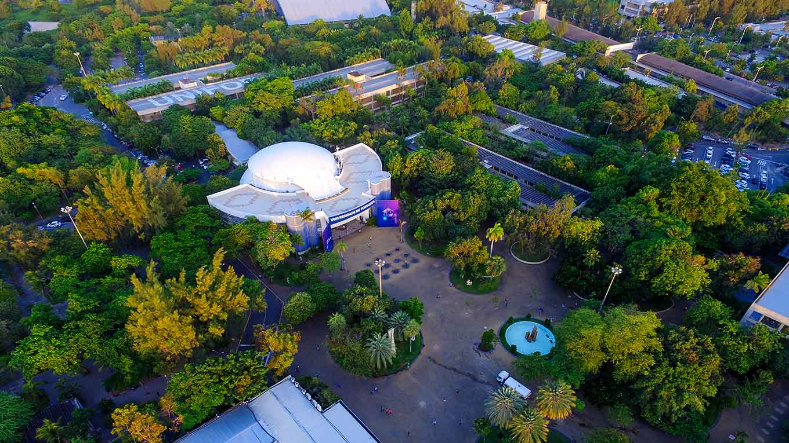

Início
Sobre
Blog Unifor
Contato

Instituição genuinamente cearense, a Fundação Edson Queiroz se orgulha por promover há décadas o desenvolvimento social, educacional e cultural do Estado e da região Nordeste. Nascida na década de 1970, em contexto local marcado por profundo déficit de escolaridade e por um quadro constrangedor de atraso regional que motivou sua criação em 26 de março de 1971, a Fundação foi uma das formas encontradas pelo industrial Edson Queiroz de retribuir, em forma de responsabilidade social, tudo o que a sua terra já lhe concedera. O maior entre os projetos sociais encampados pela Fundação se materializou na Universidade de Fortaleza, a Unifor.
Nasce uma universidade de excelência
Tendo em vista a baixa oferta de oportunidades no Ensino Superior, então resumida a poucas opções de cursos concentradas em apenas duas instituições públicas, o projeto da universidade buscou refletir a visão de excelência de Edson Queiroz, desta vez no segmento da Educação. Sempre atento aos números e com singular intuição, Edson Queiroz sabia o que as estatísticas revelavam, local e regionalmente: a constante evasão de milhares de jovens em busca de estudos mais avançados e a carência de pessoal capacitado para atender à demanda necessária ao progresso da nossa região. Foi quando o industrial apresentou, para familiares e amigos, a ideia da ampliação da disponibilidade educacional no Ceará. Em pouco tempo, sob sua presidência, formavam-se os Conselhos Curador e Diretor da Fundação, mantenedora da Universidade de Fortaleza, da qual Edson Queiroz seria seu primeiro chanceler. Com a criação da nova universidade, ampliava-se o acesso ao ensino superior, com garantia da formação de recursos humanos e capacitação de mão-de-obra qualificada para o desenvolvimento regional. Inaugurada em 1973, a universidade investe desde os seus primeiros dias, diariamente, em ensino, arte, cultura e desporto.
Nova presidência
Em 1982, o chanceler Edson Queiroz falece vítima de acidente aéreo na Serra da Aratanha, em Pacatuba, município do Ceará. Seu filho primogênito, Airton Queiroz, assume a presidência da Fundação Edson Queiroz e a chancelaria da Universidade de Fortaleza. Inovação e modernidade marcam a nova administração, a partir de quando a universidade ingressa numa fase de significativa expansão do ensino de graduação, da consolidação dos programas de pós-graduação, da ampliação dos projetos de extensão, além de se destacar como referência para as instituições de ensino superior no país. Em 2017, com o falecimento de Airton Queiroz, seu filho Edson Queiroz Neto assume como chanceler. A presidência da Fundação passa para a Sra. Lenise Queiroz Rocha, também filha do industrial Edson Queiroz, com a vice-presidência a cargo da Sra. Manoela Queiroz Bacelar. A Universidade de Fortaleza chega a 2020 com 40 cursos de graduação. A Instituição tem cerca de 300 salas de aula e 400 laboratórios especializados, com mais de 1.100 professores, sendo 80% mestres e doutores. Já graduou aproximadamente 100 mil alunos e diplomou outros 7 mil pós-graduados. Desde 2012, a instituição está em primeiro lugar no ranking das melhores universidades privadas do Norte e Nordeste do Brasil.